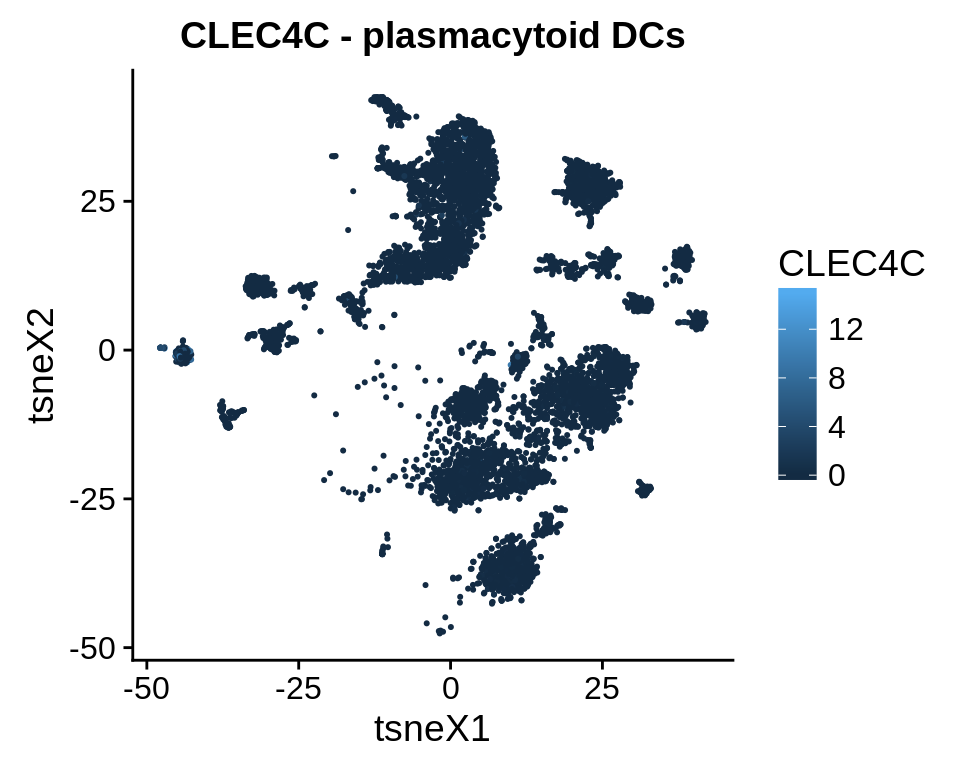
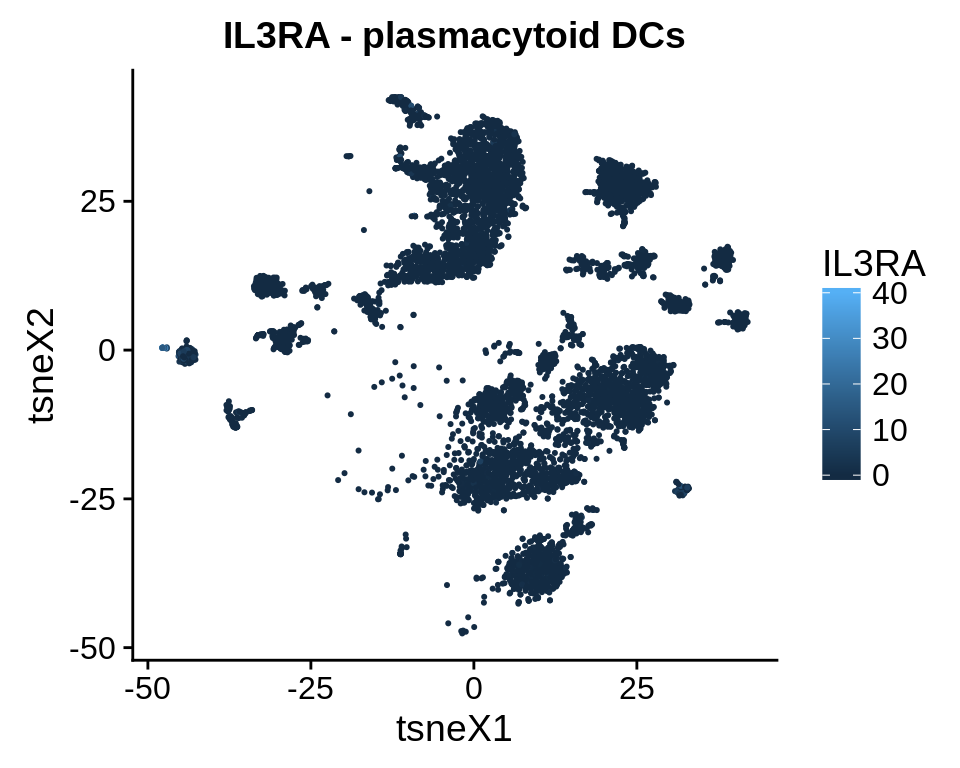

7 Spillover Analysis
In this chapter, we investigate which other cell types a method predicts, if there is actually only a certain cell type present. In FACS, this phenomenon is known as “spillover”.
To this end, we use three datasets
- immune reference: bulk RNA seq profiles from sorted immune cells (=quanTIseq training data)
- artificial bulk: simulated bulk RNA seq profiles from single cells (e.g. only T cells)
- artificial bulk with background: simulated bulk RNA seq profiles from single cells with ~80% other cells (cancer, fibroblasts, …)
We test the following cell types:
show_cell_types = c("B cell", "Dendritic cell", "Macrophage/Monocyte",
"NK cell", "T cell CD4+", "T cell CD8+")7.1 Complete Spillover Matrix

Figure 7.1: This figure shows the spillover for all methods, cell types and datasets
7.2 Summary figure: Signal to noise ratio
Noise is defined as the sum of all predictions of other cell types than the one that is actually present. Signal is defined as the predicted fraction of the cell type that is actually present. The signal ratio is defined as \(\frac{\text{signal}}{\text{signal+noise}}\). Higher values indicate less noise (i.e. predictions of cell types that are not there).
Figure 7.2: Signal ratios for each cell type and dataset.
7.3 Summary figure: migration charts
Download this figure as high quality pdf
Figure 7.3: migration charts for all three dataset. The ‘flow’ indicates which cell types have been predicted instead of the truly abundant cell type. The value in the middle of the chart indicates the ‘noise ratio’, i.e. the sum of all false positive predictions.
7.4 Investigate marker genes
Spillover appears to primarily happen between CD8+ and CD4+ T cells and from DCs to monocytes/macrophages and B cells. We were particularly concerned by the spillover between DCs and B cells as we could not validate it in the ‘immune cell reference’ dataset. In this section, we demonstrate that the single cell populations of DCs and B cells are both distinct and well-defined and, next, identify a handful of marker genes that are specific for both plasmacytoid DCs and B cells and drive the spillover.
First, we suspected that the effect might be due to misannotations in the single cell dataset. Here, we show the B cells and DCs in the t-SNE plot of the single cell dataset.Figure 7.4: B cell and DC clusters in the single cell dataset.
We observe that both clusters are distinct and non-overlapping.
Next, we look for the expression of typical marker genes of DCs and B cells.
## [[1]]
##
## [[2]]
##
## [[3]]
##
## [[4]]
##
## [[5]]
##
## [[6]]
##
## [[7]]
Conclusion: The B cell and DC cluster separate well, the marker genes do not overlap. The DC cluster are plasmacytoid DCs, mDCs are somewhere hidden in the Macrophage/Monocyte cluster and cannot be distinguished.
7.5 Check expression of markers in “detection limit” simulation dataset.
markers = list(
"B cell" = c("MS4A1", #=CD20
"CD19", "CD22"
),
"myleoid" = c("ITGAM", "ITGAX"), #=CD11B,CD11C
"MHC class II" = c("HLA-DRB1", "HLA-DRA"),
"plasmacytoid DC" = c("CLEC4C", "IL3RA"))Figure 7.5: Correlation of marker genes with increase of the amount of a certain cell type. Along x-axis: cell type used for simulation. Along y-axis: marker genes.
Figure 7.6: Even though the number of dendritic cells does correlate with MS4A1, a B cell marker, the absolute expression is really low. This effect can be driven by few misclassified cells but cannot explain the spillover effects we observe.
7.5.1 Expression of marker genes in the cell populations
For EPIC, quanTIseq and CIBERSORT, we retreive a list of all genes included in the signature matrices.
# quanTIseq
til10 = read_tsv("../immunedeconv/inst/extdata/quantiseq/TIL10_signature.txt") %>% as.data.frame() %>%
column_to_rownames("ID")
# EPIC
tref = EPIC::TRef$refProfiles[EPIC::TRef$sigGenes,]
# CIBERSORT
lm22 = read_tsv("../lib/CIBERSORT/LM22.txt") %>% as.data.frame() %>% column_to_rownames("Gene symbol")For each marker gene, we show the expression in all cell type populations in the single cell dataset. We sort the list by the product of the mean expression in B cells and Dendritic cells to obtain a ranked list of genes that are enriched in both B cells and DCs. i
The plots are very large, that’s why we don’t include them directly. You can view the plots in full quality as PDF under the following links:
The figures show the expression of marker genes across cell types. Along x-axis: cell types used for simulation. Along y-axis: signature genes for the cell types derived from the signature matrices of the deconvolution methods.
7.6 Deconvolution results before and after
We checked the most promising candidate genes on genecards.org, and took note of those that were indeed annotated as being specific for both B cells and plasmacytoid dendritic cells in the LifeMap Discovery database.
To assess the effects on deconvolution, we generate 10 simulated dendritic cell samples, run the deconvolution once with default options and once with the marker genes removed, and check the ‘spillover’ to B cells.

Figure 7.7: Predictions on 10 simulated DC samples before and after removal of the six genes.